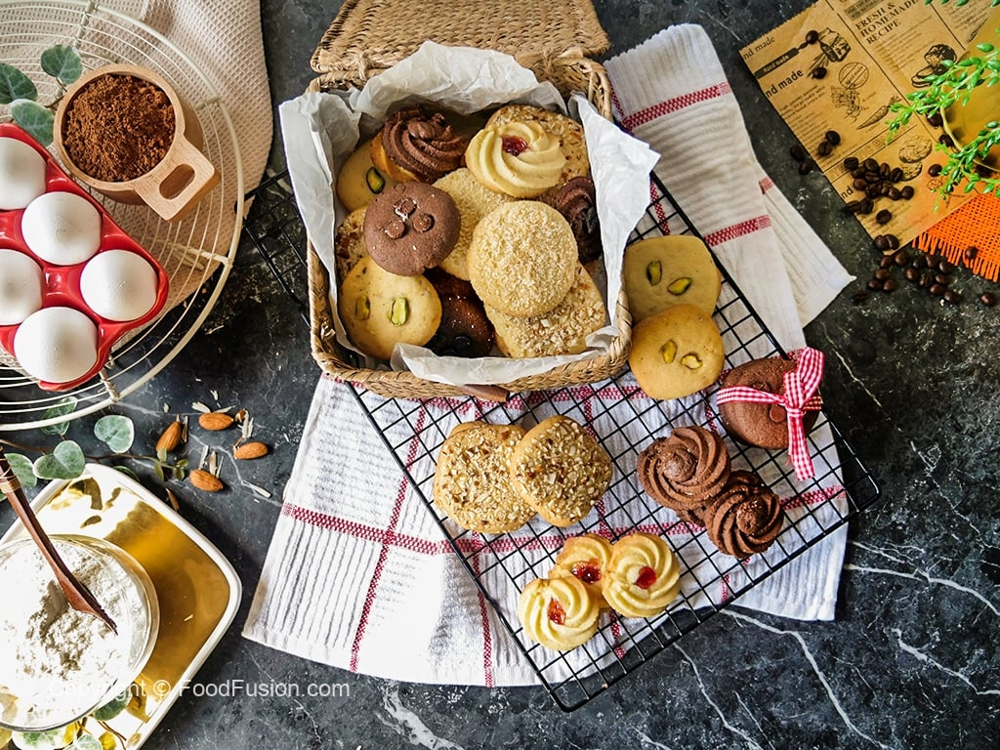

This image features a stunning array of intricately decorated cakes, each with its unique design, from delicate floral accents to rich, creamy layers. The cakes are adorned with elegant details like gold swirls, fresh fruits, and sculpted flowers, highlighting both artistic craftsmanship and indulgent flavors.
Homemade Cookies

A cozy arrangement of homemade cookies, presented on a cooling rack, highlights a delightful mix of buttery, chocolatey, and nutty flavors. Surrounded by baking essentials like eggs, flour, and cocoa, this scene perfectly captures the warmth and charm of home baking.
Chocolates
Chocolates, with their rich and velvety texture, offer a luxurious indulgence that delights the senses. Whether in the form of creamy truffles, dark chocolate bars, or delicate pralines, each piece promises a burst of intense flavor.